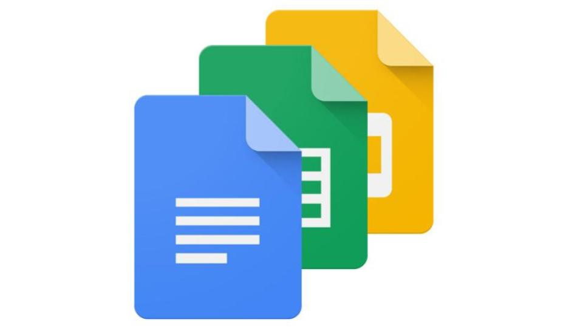

Google Docs
Google docs is a web-based service that allows a user to make documents and spreadsheets and store them online.
A user can access files from any computer which has an internet connection and web browser. A user can use this service by installing Google docs app or plugin chrome extension. Once this is done, user able to use the Google docs by sign in through Google account. if the user don’t have an account they can make one by providing few information.
This is a free service which provides more features like Microsoft office. One of the most advantages of this service is, a user can share documents to anyone even who don’t have a Google account. A recipient has the ability to edit and make changes to the document.
This service is a better one as anyone can use this service by using any internet accessible device from anywhere in the world.